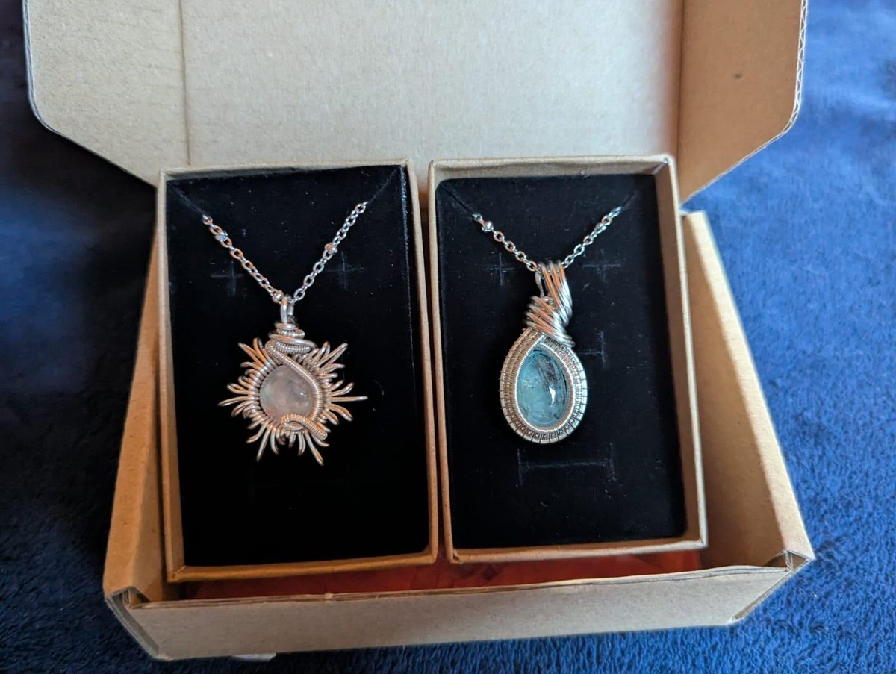

Pezzi unici
La collezione
Chi sono
Porto e mare aperto
La culla della luna nasce con l’idea di essere rifugio per anime inquiete. Posto nel quale concedersi di essere fragili. Porto e mare aperto. Culla che protegge, permettendo al nostro sguardo di volare sempre più in alto.
Alessia Iraci
Io sono Alessia, fotografa e creatrice di gioielli siciliana. Tramite l’arte riesco ad esprimere le mie emozioni, il mio sentire, il mio modo di vedere.
Questa antica tecnica del wire wrapping mi permette di dar vita ad intrecci astratti che sembrano trovare una loro forma.
Luna che sussurra, consigliando di immergerci nelle nostre ombre, perché solo in quell’abisso riusciremo a scorgere la vera luce.
Materiali
Come sono fatti
- Il filoRame placcato oro 14k oppure argento, intrecciato a mano.
- La pietraSempre naturale: labradorite, adularia, larimar, lapislazzuli, acquamarina e altre.
- La cateninaAcciaio inossidabile, con 5 cm di anellini per regolarla.
- La pelleTutto senza nichel.
- Gli anelliFatti su misura.
- La spedizioneEntro 3 giorni lavorativi dall’ordine.

Scrivi ad Alessia.
Per un pezzo già venduto, una pietra che ti piace o un anello su misura.
alessiairaci952@gmail.com